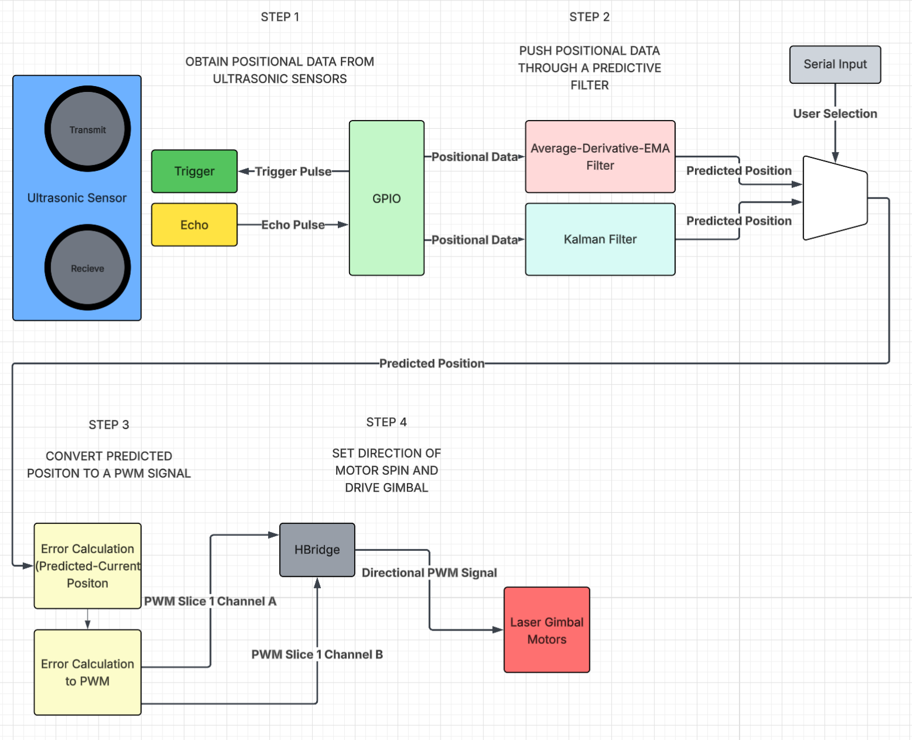
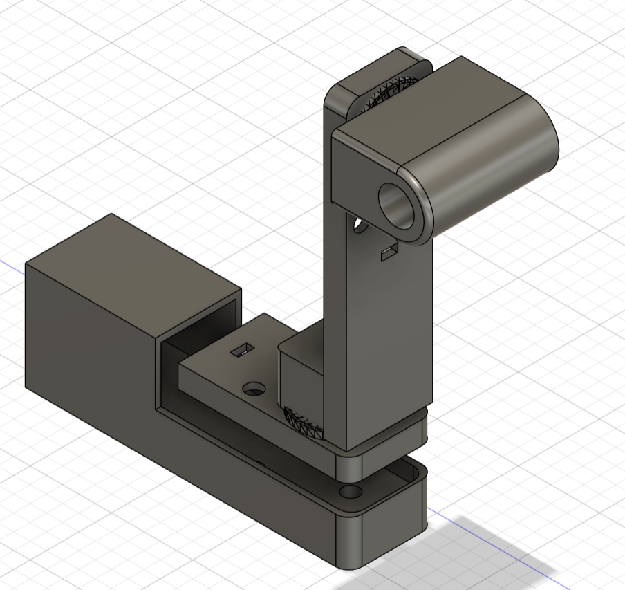
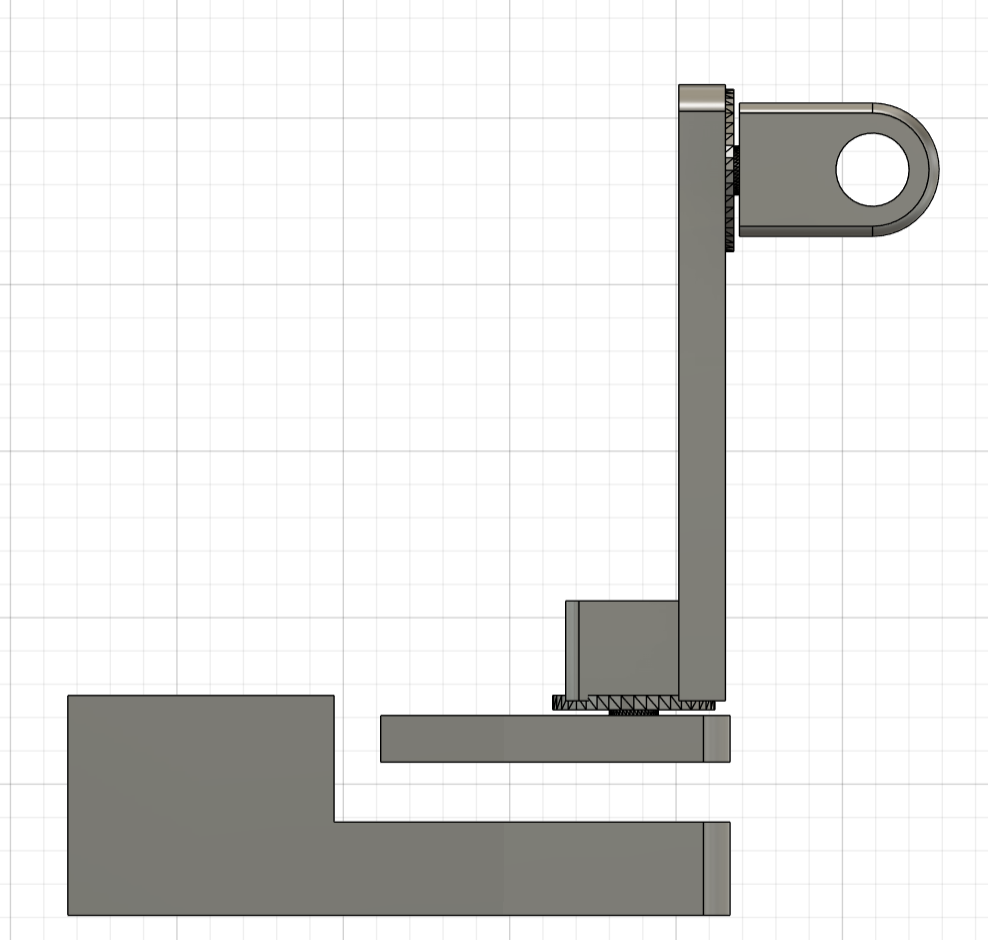
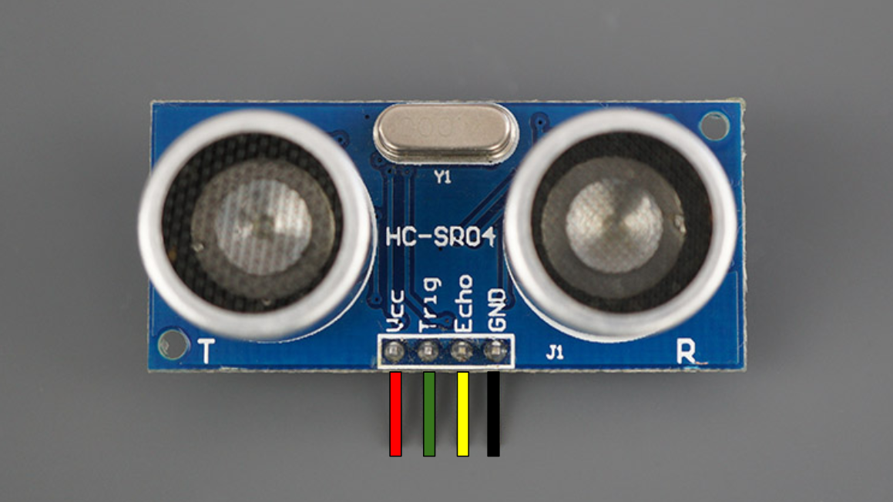

Project Introduction
We implemented live object tracking with four ultrasonic sensors fired in sequence to triangulate an object’s position. That positional data was then fed into predictive algorithms designed to estimate the target’s future location. Without prediction, the system would constantly lag behind the moving object, so this step was critical for maintaining alignment. The original plan was to control a laser mounted on a two-axis motor platform. The predicted position would be compared to the current mount orientation, and the resulting error would be translated into PWM values to drive an H-bridge for multidirectional motor control. Although the mount was not fabricated as explained later, all supporting software was developed. In addition to the base prediction algorithm, a second algorithm was introduced for performance comparison. We incorporated multiple VGA visualizations to display system state and algorithm behavior, as well as a pattern-mode generator that fed synthetic circular motion data for benchmarking accuracy and speed. Using serial input, a user can switch between VGA displays, select algorithm parameters, and change operating modes. Ultimately, the final system showcases 2D ultrasonic mapping and predictive-tracking algorithms and serves as a functional program that is ready to integrate with a physical laser-tracking mount in future work.
High Level Design
Inspiration
This project was loosely inspired by Tyler’s internship experience at the High Energy Laser System Test Facility at White Sands Missile Range. At the range, they are doing cutting-edge testing with laser missile defense systems, and it seemed like a fun idea to replicate an undergraduate-level version of the work they do at the missile range and use the technology available in a lab to achieve the same goal of laser object tracking.
Logical Structure
We sequentially triggered each ultrasonic sensor every 25 ms, producing a full four-sensor positional update every 100 ms. Each sensor’s echo time was captured through its respective GPIO interrupt, and those four measurements were combined to estimate the object’s center position. Two filtering approaches were implemented to clean and predict positions: a combined averaging–derivative–EMA method and a Kalman filter.
The predicted position was intended to drive a two-axis laser gimbal. Infrared LEDs would determine the current orientation in theta and pitch, which would then be compared to the predicted angles. The positional error would be converted into weighted PWM values for an H-bridge motor driver, enabling bidirectional control of both axes. Although the gimbal hardware was never fabricated, the full prediction and control logic was completed and validated virtually. VGA visualizations and serial user controls were added to observe and compare motion, filter behavior, and tuning parameters in real time. The user interface enables full customization of filter and PWM weighting parameters, control over what data is displayed on the VGA output, and the option to generate synthetic ultrasonic positions for benchmarking and comparison.
The full logical structure is showcased in the diagram below
Hardware and Software Tradeoffs
Working with ultrasonic sensors highlighted the challenges of real-world noise, inconsistent reflections, and occasional missed readings. These limitations required us to create strong software filtering and prediction algorithms to stabilize measurements and reduce jitter. The biggest hardware obstacle was printing the laser gimbal. We had created the 3D CAD model and submitted it to the Cornell Rapid Prototyping Lab for printing 5 days out from the final project date, and we never received it. Due to this hardware hiccup, we pivoted to a more software-based final project to emphasize and enhance the software components of our project as opposed to tuning the weighting and the prediction algorithms to make the 3D laser tracking gimbal as precise and quick as possible. The intended 3D-printed gimbal can be seen below:
 Thus, with a stronger emphasis on software, the project became a platform for demonstrating motion mapping, prediction algorithms, visualization, and motor control logic, all of which were designed so that hardware could be added later with minimal rework. In the end, the system showcased the strengths of algorithmic compensation for noisy sensors and proved that the tracking pipeline could operate effectively even without the physical gimbal, while remaining fully compatible for future integration.
The system is composed of several key components:
- Ultrasonic sensors for object detection and triangulation
- Predictive algorithms for tracking and future position estimation
- VGA visualization tools for system monitoring
- Pattern-mode generator for benchmarking
- Serial interface for user interaction and control
Program and Hardware
Obtaining Positional Data
To get positional data from the object in a 2D plane, HC-SR04 ultrasonic sensors were used as pictured below. This particular sensor was chosen as they were already available in the lab and are fairly cheap.
Ultrasonic distance sensing works by transmitting high-frequency sound waves and measuring the time it takes for those waves to reflect off an object and return to the sensor. The sensing module contains two piezoelectric transducers. One acts as a speaker and the other as a microphone (T and R, respectively, in the photo). When triggered, the transmitting transducer rapidly oscillates at roughly 40 kHz, which produces an ultrasonic burst that travels outward through the air. Because this frequency is well above the range of human hearing, it doesn’t make a noticeable sound but still propagates efficiently enough for short-range measurement (<4m). We decided that to maximize accuracy but also enhance complexity, we would aim for a 2D plane of coverage between 0.75 and 1 square meter. For the final project demo due to space constraints, it ended up being 0.87 square meters which was within our goal range but slightly below our original goal of 1 square meter.

As the sound wave travels, it eventually encounters a surface, and part of the energy is reflected back toward the sensor. The receiving transducer detects this returning echo by converting the mechanical vibration of the reflected wave back into an electrical signal. The time interval between transmitting the burst and receiving the echo corresponds to the round-trip travel time of the sound wave. Since the speed of sound in air is easily approximated under typical conditions, it is easy to calculate the distance as described later below.
This method is useful because it does not require physical contact with the object, and it is useful in any lighting conditions and can be used indoors, unlike optical or GPS sensing. However, as we discovered, accuracy can be greatly influenced by object material and surface orientation, which affect reflection quality and the speed of sound. At a system level, this means precise timing and noise handling are essential, especially when performing real-time measurements or tracking moving objects. We initially wanted to use RFID tracking, but that proved to exceed the $125 budget for the project, as it is vastly more expensive than ultrasonic sensors.
Each ultrasonic sensor was triggered sequentially every 25 ms, producing a full positional update from all four sensors every 100 ms. This was done by setting the respective GPIO trigger pin high for 10μs before setting it low. This sends a trigger pulse to the ultrasonic sensor. Immediately after transmission, the sensor raises the echo pin to a high state and keeps it high until the reflected pulse is received. The duration of this high period on the echo pin is directly proportional to the round-trip time of the sound wave. By measuring this pulse width and applying the speed of sound conversion, the distance to the object can be calculated. Using ultrasonic sensors made the positional readings fairly simple since they required only a single trigger pulse and a precise measurement of the echo pulse length to obtain a distance reading.
Since we used four ultrasonic sensors, the interface required a total of eight GPIO pins; one trigger and one echo per sensor. In principle, this could have been reduced to as few as five pins by sharing a single echo pin among all sensors. Because only the sensor that receives a trigger pulse will drive its echo line high, a shared echo pin would always correspond to the currently triggered sensor, making dedicated echo lines functionally redundant. However, given that we had sufficient GPIO resources available, we kept our original design with assigning a unique trigger and echo pin to each sensor.
The echo pins of the sensors were configured with GPIO interrupts on both rising and falling edges. When the rising edge was detected, the interrupt service routine (ISR) recorded the start time of the pulse using a microsecond-resolution timer. When the falling edge was detected, the ISR recorded the end time and calculated the pulse width as the difference between the two timestamps. This pulse width was then converted into distance using a floating-point multiplication with the speed of sound. We chose to use GPIO interrupts to ensure accurate timing because they would reflect the hardware measurements the best. Since the timings were based on the high/low state of the echo pin on the ultrasonic sensor, the GPIO interrupt has the lowest latency and allowed us to get the most accurate real-time measurements. An additional hardware consideration with our software was staggering the trigger pulses to ensure that only one sensor responded at a time. This was to avoid cross-talk between sensors and also would allow a single ISR to efficiently handle all four sensors.
The HC-SR04 ultrasonic sensors we used required a 5 V power supply for operation, but the RP2040 GPIO pins operate at 3.3 V and are not 5 V tolerant. This presented a hardware consideration, as directly connecting the sensor’s echo output to a GPIO pin could potentially damage the microcontroller. To safely interface the sensors, we implemented a simple voltage divider using resistors on the echo lines, which scaled the 5 V output down to a safe 3.3 V level compatible with the RP2040. To calculate the appropriate resistor values for the voltage divider, we used the following equation:
Where R1 is the resistor connected between the echo output and the GPIO input, and R2 is the resistor between the GPIO input and ground. We solved the above equation using our voltage values and found the following ratio:
Using this ratio, we chose to set R1 to 1kΩ and R2 to 2kΩ. This gave us the following hardware setup for the HC-SR04 ultrasonic sensors:
Distance Calculation Optimizations
During the software development process, we considered several optimization strategies to minimize the execution time of the distance calculation code inside the ISR. Since this interrupt ran on Core 0, any unnecessary delay directly impacted the threads responsible for generating trigger pulses and handling serial communication. Therefore, ensuring the ISR executed as quickly as possible was critical to keeping the trigger data coming in at roughly 10Hz for best performance.
We tested multiple arithmetic approaches to compute the distance from the echo pulse width:
- Floating point: From the Digital Galton Board lab, we know floating-point operations are the slowest form of arithmetic on the RP2040. To mitigate this, we precomputed the round-trip speed-of-sound constant (0.343/2.0) and stored it as a variable so that the division only occurred once. This reduced some overhead, but floating-point multiplication is still slow compared to integer math. That said, this method produces the most accurate results since it directly represents the physical speed of sound without approximation.
- Integer division and multiplication: Switching to integer arithmetic removed the need for float conversion and reduced execution time. We determined that the ratio 100/5800 closely approximates (0.343/2.0). Based on our previous Digital Galton Board work, we know that integer multiplication is dramatically faster than floating-point multiplication on the RP2040. Although integer division is slower than integer multiplication, it is still faster overall than floating-point operations. This method maintains high accuracy and is more computationally efficient than floating point, making it a strong compromise between speed and precision.
- Bit shifting: Bit shifting is the fastest arithmetic approach available in C, as it compiles to extremely quick operations on the RP2040. However, this method has the lowest precision due to large amounts of rounding, resulting in significant approximation error.
Error percentage calculated in the table above using the following formula:
Since timing was only a secondary concern and achieving maximum precision was critical, minimizing error became the primary consideration. Ultimately, we chose to use floating-point arithmetic, as it provided the most accurate results while still allowing the ultrasonic sensors to maintain a high sample rate. This was an example of a compromise between speed and accuracy with our software.
Averaging-Derivative-EMA Filter
Now that we have covered how we were getting the positional data from the ultrasonic sensor, let's analyze how we filtered the positional data. The first filter we implemented was an averaging–derivative–EMA. All the following steps will be explained for the x-center coordinate, but the following steps were also applied for the y-center coordinates. The first step in this filter was to maintain an array of the three most recent x-coordinate measurements. To do this, we implemented a sliding array function that placed the newest position at the end of the array and shifted all the previously stored values down. Thus, the oldest position would be shifted out of the array and removed. After updating the positional array with the 3 newest positional values, we took the average of the last 3 samples. This averaging step helped us smooth out high-frequency noise and prevented a single outlier measurement from disproportionately affecting the estimated position. We chose a window size of three because it would still keep the sensor highly responsive while also reducing the impact of noise.
The next step was to do velocity estimation. To compute velocity, we used the three most recent position values and applied the more accurate three-point forward derivative approximation rather than a simple two-point derivative. The three-point derivate provides a more stable velocity estimate, especially when measurements are susceptible to noise. The formula is shown below:
Where the array indices are from the positional array above, remembering that the most recent values are the highest indices in the array. Because our sampling rate was relatively fixed at dt=100ms, the derivative approximation allowed us to calculate the object’s instantaneous speed without needing additional sensors.
Using the current averaged position and the estimated velocity, we predicted the object’s location one time step (100ms) into the future. This forward extrapolation is very simple and works well for objects that are moving consistently, but by only storing the 3 most recent positions, it would still be responsive to rapid changes in movement. This was further tailored by adding an EMA (Exponential Moving Average) calculation at the end. This EMA used the following formula:
The old and new EMA weights were user-configurable through the serial interface, allowing real-time tuning of how much trust was placed in the most recent measurement versus historical data. Conceptually, the EMA provides a fixed weighting scheme that prioritizes recent samples while still retaining residual influence from older readings. When the old weight is large (e.g., 0.8–0.9), the filter applies strong smoothing, which significantly reduces random noise but slows the reaction to rapid changes in object position. Conversely, when the new-sample weight dominates (e.g., 0.5 or above), the filter reacts quickly to movement at the cost of exposing more jitter in the output. We ultimately selected 0.8 for the old weight and 0.2 for the new weight as a default configuration, which would give us a fairly balanced compromise. In this configuration, it suppresses the ultrasonic jitter we observed during testing while still maintaining sufficient responsiveness to track moderate object motion without lagging.
Kalman Filter
We also decided to implement a Kalman filter to compare accuracy and speed to the Averaging–Derivative–EMA filter. We chose to use a standard Kalman filter instead of an Extended Kalman Filter (EKF) or other variants that were demonstrated on the 4760 webpage because our system dynamics were linear and could be modeled with a straightforward state-space representation. The ultrasonic distance measurement process is fairly linear since distance is directly proportional to the measured pulse width, and the system noise is approximately Gaussian for ultrasonic sensors, as there are a lot of small disturbances that contribute to the measurement error. We noticed this because when we placed objects at certain distances or orientations that caused the sensors to read erroneously, the values output were never constant. They fluctuated on the order of tens of cm apart for an object 15cm away. This told us that the errors could be approximated as a Gaussian since it was likely that if we stored all the error values over multiple minutes, it would likely approach a Gaussian distribution.
For creating the standard Kalman filter, we used the 4760 website and Wikipedia to understand the algorithm and then worked with ChatGPT to convert it into code. We used GPT because even after reading the Wikipedia article and the 4760 website, it was still a complex algorithm, and we wanted to ensure that we were adapting it properly to fit the state variables we wanted to input. We also used ChatGPT to create linear algebra helper functions to speed up that process and also check the implementation of all the stages of the filter to make sure it was accurate. This whole process allowed us to implement faster, confirm understanding, and ensure the correctness of the more complex filter when compared to the average-derivative-EMA filter.
A Kalman filter is a predictive and corrective algorithm that maintains a state estimate of a system and continuously updates this estimate as new measurements are inputted. The state vector for our system is the following array, where x and y are the coordinates of the object center in cm, and vx and vy are the velocities in the x and y directions, respectively:
Then, the filter alternates between prediction and update steps. In the prediction step, we use a constant velocity model to estimate where the object will be at the next timestep. Since we get a full position update from the sensors approximately every 100ms, we set that value to be the time step.
Where F is the state transition matrix:
This predicts that the new position is the old position plus velocity times the timestep, while velocity remains unchanged. The filter also updates the covariance matrix P, which represents uncertainty in the estimate:
Q is the process noise matrix, which accounts for uncertainty in the system model, such as how much we trust the constant velocity assumption. Inside this matrix, we have parameters that the user can tune through the serial interface. The first parameter is Q_pos, which is the uncertainty in the position prediction. A smaller Q_pos value strongly trusts the motion model, so the predicted state is smooth but may lag and ignore quick maneuvers by the object. A larger Q_pos value allows for more rapid local deviations, and it follows fast motion better, but it can become susceptible to noise. The second parameter is Q_vel, which is the uncertainty in the velocity. As with position, a larger Q_vel value reacts faster to direction/speed changes, but it lets more noise into the velocity and position. A smaller Q_vel value trusts the model more and makes it smoother but slower to react to rapid changes.
The next step is to update the prediction. Once a new measurement comes in from the ultrasonic sensors, the filter corrects its prediction. The first step is to compute the measurement residual (innovation covariance) using the following formula:
Where z is the measurement vector:
H is the measurement matrix:
H basically just extracts position from the state vector. The innovation tells us how far off the prediction was from what was measured. The next step is to compute the innovation covariance with the following formula:
R is the measurement noise matrix, which represents how much we trust the sensors. Like the process noise matrix Q, the user is also able to adjust the measurement noise matrix R. A smaller R_meas follows the raw position closely, which has less smoothing and more jitter. A larger R_meas will smooth more but react more slowly to real movement. Using the innovation covariance matrix, we then compute the Kalman Gain, which determines how much we adjust our predictions.
If the measurement is very reliable compared to our prediction uncertainty, K will be larger, meaning the measurement heavily influences the state update. Next, we update the state estimate using the following equation:
This will change the predicted state towards the measurement with the weighting set by the Kalman Gain and the innovation covariance. The final step is to update the covariance using the following formula:
This will reduce the uncertainty P proportional to how much the measurement corrects the prediction. If the measurement is trusted (low R), the Kalman Gain K is large and the update strongly corrects the prediction. This will result in a shrinking of P since we have good data and are now more confident in the model. If the sensors give noisy readings, the prediction step increases P.
In summary, our 2D Kalman filter does the following:
- 1. Predicts where the object will be next based on velocity
- 2. Compares that prediction with the measured ultrasonic positions
- 3. Corrects the estimate in a weighted way, factoring in measurement and process uncertainty
- 4. Outputs a smoothed and predictive (x,y) position that we will use for controlling where the laser gimbal points
Coordinate System Conversions
To convert our (x,y) positional outputs to theta measurements that we could compare to the laser gimbal position, we utilized the following methods. For theta, we first converted the x and y measurements to radians by using:
We then converted from radians to degrees by multiplying our radians by 180/π. For the pitch, we calculated the change in radians using the x, y, and z:
This was also then changed to degrees by multiplying by 180/π. With the predicted positions converted into corresponding theta and pitch values, we could then compare our estimates to the actual gimbal angles. If the computed error value was negative, the corresponding motor would spin clockwise, and if the error was positive, it would spin counterclockwise. This mapping is applied independently to both the theta and pitch axes, allowing the gimbal to correct its position in both directions based on the sign and magnitude of the error.
IR Gimbal Position Sensing
Our original plan for determining the gimbal’s real-time position focused on using infrared light sensors rather than a conventional IMU. We wanted to explore an alternative sensing method that was both low-cost and already accessible in the lab, so an infrared-based encoder system was an interesting option. The setup required only an IR LED, an IR phototransistor sensor, and a 3D-printed encoder wheel. The general configuration we wanted to follow is illustrated below:
Basically, the system works by shining an infrared LED through a rotating encoder disk and detecting the light on the opposite side with a photoresistor or photodiode. The encoder disk is patterned with alternating transparent and opaque sections. As it rotates with the gimbal, these sections periodically block and allow infrared light to reach the sensor. When a transparent window aligns with the LED, the sensor receives maximum light and the voltage across it changes accordingly. When an opaque section passes in front, the light is blocked and the sensor output drops.
By counting these transitions from light to dark and dark to light, we can determine how far the gimbal has rotated. Each pair of transitions corresponds to one slot on the encoder disk, and knowing the total number of slots allows us to compute angular displacement. By starting each program from a known reference position, we can accurately compute the gimbal’s angle throughout operation. To create this reference, we planned to include a distinctly wider encoder segment on the disk. At startup, the motors would drive the gimbal clockwise at a constant speed until the IR phototransistor detects this wider segment. Because this region allows IR light to pass for noticeably longer than any of the standard segments, the resulting voltage level remains steady for a longer duration, which would make it easy to identify as the “home” position.
Regarding resolution, we determined that 5-degree increments were sufficient for our performance requirements. Achieving finer precision would have required a much larger encoder disk or significantly narrower segment widths, both of which would introduce manufacturing challenges, especially with our 3D-printed setup. Thus, we determined that 5 degrees struck a practical balance between positional accuracy, mechanical constraints, and ease of fabrication. This would result in 36 slots for IR light to pass through.
With both of these new values, we calculated the error in both theta and pitch and sent signals to the motors based on these errors. Using these error values, we converted them directly into PWM values to drive the motors on the laser gimbal.
PWM Control
We used the PWM peripheral on the RP2040 to control the motors on the laser gimbal. The RP2040 has 8 PWM slices with two channels (A and B). Each slice generates a repeating counter that counts from 0 up to a programmable wrap value. The counter resets when it reaches that wrap value. We chose a PWM wrap value of 5000 and a clock divide value of 25. For a CPU rate of 125 MHz, this gives us a PWM frequency of 1KHz which is reasonable for driving DC motors.
The control algorithm computed a numerical error value, which was then multiplied by a weighting factor and mapped to a PWM channel level between 0 and 5000. Because we did not have access to the laser gimbal hardware during development, the weight value served as a tunable placeholder, but is currently able to be adjusted by the user through serial input. In practice, this weight would be selected so that the scaled error produces an appropriate motor response, ensuring that the gimbal reacts proportionally to the magnitude of the error. Additional tuning could be achieved through mechanical gearing (high speed to low speed), enabling finer control over the motor output.
A PWM channel value of 5000 corresponds to a 100% duty cycle and therefore maximum motor power. We utilized the on_pwm_wrap() callback function, which is invoked each time the PWM counter reaches its wrap value. This ensures that channel adjustments are applied cleanly at the start of each new cycle, preventing timing conflicts. Since we used two PWM slices, one per motor, the callback also identifies which slice triggered the wrap, allowing us to update only the corresponding motor’s output.
To control the direction of the motors, we used an H-bridge as shown below. Each motor had a dedicated H-bridge so that each motor could be independently controlled. At a high level, an H-Bridge is a circuit that enables current to flow through a motor in either direction. By driving one input high while keeping the other low, the motor rotates clockwise, while reversing the inputs rotates the motor counterclockwise. The H-bridge circuit is shown below:
This circuit corresponds to the following pinout:
In our implementation, each motor was controlled through two PWM inputs corresponding to IA and IB in the H-Bridge diagram. Each motor was assigned its own PWM slice, with the two channels on that slice driving the two inputs. During operation, the control algorithm sets a PWM duty cycle on one channel while keeping the other at 0 to control the motor’s spin direction. The motor wires, labeled OA and OB in the diagram, are connected to the output of the H-Bridge, allowing current to flow through the motor in the correct direction for the desired rotation.
Motor
For our laser gimbal, we used dual-shaft DC motors with a 1:48 gear ratio. These motors were readily available in the lab and proved well-suited for precise positioning. They responded reliably to small changes in PWM signals and could be driven both clockwise and counterclockwise. One motor was assigned to control the theta angle of the laser gimbal, while the second motor controlled the pitch angle, providing accurate two-axis positioning for the system.

VGA Component
We also added a VGA screen component to our project to enhance the user experience. The VGA display has multiple data displays that allow the user to choose what data from the system they want to observe. The protothread_anim function controls the entire VGA display and run on the only thread in core 1 on our microcontroller. Each iteration of the animation loop represents a single frame, and the function carefully tracks timing to maintain a consistent 30 fps frame rate. Additionally, the function waits for the vertical sync (VSYNC) signal to go low before starting the frame. We had some issues with black smears appearing across the screen, and waiting for the VSYNC signal solved those problems.
When the system is operating in pattern mode, synthetic object positions are generated rather than relying on actual sensor readings. In this mode, the object moves in a circular path centered in the field, and the angular velocity determines the speed of revolution. From these positions, virtual distances to four sensors are calculated to mimic what ultrasonic distance sensors would measure. These distances are then clamped to ensure they remain within the physical bounds of the field. This is meant to be used in a baselining mode where the user can compare the selected filters’ parameters to a consistent baseline pattern. The user is also able to compare filters directly to each other, along with the baseline, in this mode. The following photo is from an EMA filter prediction with 99% old weighting.

Once either real or synthetic distances are obtained, the function computes the center position of the object in both the x and y directions. This is done by averaging the front and back sensor readings for each axis, producing a reliable estimate of the object’s center. These center positions are converted into pixel coordinates to match the display resolution. The system also pushes these positions into the respective positional arrays for predictive filtering. Both filtered positions are also converted to pixel coordinates for visualization purposes.
The function supports multiple drawing modes to provide different levels of information to the user. In grid mode, the object is drawn as a rectangle within a 2D grid representing the field.
In prediction mode, the object is drawn along with its predicted positions from both the Kalman and EMA filters, allowing users to visually compare filtered predictions with raw measurements. The following photo shows the object with its boundaries in red, measured center as a red circle, EMA filter predicted center in green, and kalman predicted center in blue. This photo is from the final project demo and shows the object having recently moved so the EMA filter is slightly behind where the measured center is.
In program mode, the object’s center is continuously drawn without erasing previous frames, useful for creating trajectory patterns or long-term tracking visualization. It can also be used as a drawing program to make cool patterns. The following picture is just a straight line showing an object moving from bottom to top over time.
Finally, in info mode, textual data is displayed on the screen, including raw sensor distances, computed positions, filtered positions, gimbal angles, positional errors, and motor PWM outputs. This mode is particularly helpful for debugging and tuning system performance. More or less infomation is populated depending on what features, filters, and modes are enabled by the user.
Finally, the function manages frame timing to maintain a consistent animation rate. After all computations and drawing operations are complete, the function calculates the remaining time in the frame and yields execution for that period. This ensures that each frame maintains a predictable duration, leading to smooth and consistent visualization.
Serial Control
We used the serial input port to control and set variables for various things across our program. The table below summarizes all the user-controlled functions:
Control Reference Guide
Start Measuring
1: Start ultrasonic sensors
VGA Screen Mode Select
2: 2D grid view (object rectangle on grid), screen cleared3: Ball + prediction view (raw rectangle + predicted center)4: INFO view (raw distances, X/Y, filtered values, errors, PWM, KF values)5: Drawing mode (draw object center + prediction)
Type of Mode Used
7: Use θ/pitch error mode (gimbal angles)8: Use X/Y error mode (position error in cm)
Drawing Options
10: Set drawing color to red11: Set drawing color to white12: Set drawing color to blue13: Set drawing color to green14: Set drawing color to black15: Clear the screen once
Kalman Filter Parameters
-
16: Set q_pos (position noise variance, cm²)
→ Low values = smooth, trusts model more.
→ High values = reacts quickly, noisier.
Default:q_pos = 1 -
17: Set q_vel (velocity noise variance, (cm/s)²)
→ Low = slow changes
→ High = fast changes, noisier
Default:q_vel = 10 -
18: Set r_meas (measurement noise, cm²)
→ Low = follow raw data closely (noisy)
→ High = smooth, slower reaction
Default:r_meas = 25
Filter Toggle Options
19: Toggle Kalman filter on/off20: Toggle EMA filter on/off
EMA Parameters
21: Set EMA old_weight (0.0–0.99), new_weight = 1 – old
Gain Parameters
22: Set theta gain23: Set pitch gain24: Set EMA motor 1 gain25: Set EMA motor 2 gain
Laser Control
26: Toggle laser on/off
Pattern Mode
27: Toggle pattern mode on/off
Motor PWM Control
- Any integer
0–5000: Sets motor 1 and motor 2 PWM duty level if ultrasonic sensors are not active
Results of the Design
Accuracy Results
We initially expected the accuracy of our system to be evaluated by how quickly and precisely the laser gimbal could physically react to abrupt changes in target position. However, after shifting the project toward a more software-focused implementation, our performance criteria changed as well. The primary metric for accuracy became how well our filtering methods could reconstruct and predict object motion based on noisy ultrasonic data.
To establish a baseline, we generated a known circular motion pattern and compared the filter outputs directly against it. The Kalman filter demonstrated excellent performance and it closely tracked the pattern trajectory exactly. It was a great success and proved that we had implemented the Kalman filtering algorithm correctly.
The EMA-based filter, while simpler and computationally lighter, exhibited slightly less accuracy. With the default coefficients of 0.8 for the previous estimate and 0.2 for the new measurement, the EMA output tended to remain slightly inside the true circular path.
When the weighting was shifted to favor the new measurements more heavily, the EMA filter overshot the circular pattern. This picture is from the lab demo so the middle section was demonstrating a different EMA weighting of 99% for the old weight.
Overall, these results demonstrate that the Kalman filter offers superior accuracy for this type of dynamic tracking, particularly when movement is smooth and measurement noise is nontrivial. The EMA filter remains a viable alternative for systems where simplicity and computational speed are prioritized, but for our goals of maximizing precision and predictive capability, the Kalman filter clearly provided the most reliable performance. Perhaps with more tailoring, the EMA filter could keep up, but for now, the Kalman filter reigns supreme for 2D ultrasonic mapping.
Speed of Execution Results
As discussed earlier, we considered optimization and execution speed, but our system architecture allowed us to meet timing requirements without aggressively optimizing. The most critical real-time constraint in the project was maintaining the VGA refresh rate. At 30 frames per second, the computational load of our filtering, distance calculations, and control logic was well within the RP2040’s capabilities, and we never failed to meet the frame deadlines during testing. A major reason for this was the decision to isolate the VGA animations on one core (Core 1) while dedicating the other core to ultrasonic sampling, filtering, and motor control. This separation prevented display tasks from competing with sensor processing, ensuring we met timing.
We also relied on interrupts to meet key timing milestones. GPIO interrupts were used for the HC-SR04 ECHO rising and falling edges, allowing us to capture time-of-flight measurements accurately with microsecond resolution. Similarly, PWM wrap interrupts enabled us to safely update motor duty cycles at the start of each PWM period, ensuring clean transitions and preventing output glitches. These interrupt-driven approaches offloaded time-critical work from the main loop and ensured responsiveness without requiring complex scheduling.
To maintain responsiveness and interactivity, the system used non-blocking serial input, allowing users to enable filters, change parameters, or adjust gimbal control values without halting data acquisition. This design ensured that the core responsible for ultrasonic timing was never stalled by user input.
While we evaluated speed–accuracy trade-offs, the overall goal of the software was precision rather than extreme computational efficiency. Given the modest timing constraints and the RP2040’s dual-core architecture, we had the flexibility to implement filtering and prediction algorithms without harming frame timing or sensor sample rate. In the end, we achieved a system that was interactive, accurate, and free of timing issues.
Safety Considerations
If the laser gimbal hardware had been fully implemented, the primary safety considerations would have been the laser itself. We purchased a Class 1 laser rated at approximately 0.1 mW, which is considered eye-safe under normal operation. In addition, the objects placed within the 2D tracking plane were intentionally non-reflective to minimize the possibility of reflections, which could redirect the beam unpredictably at unprepared eyeballs. Our intended operating procedure also ensured that the laser would only be turned on when the program is pointed at the tracking surface as an added safety measure.
Beyond the laser, there were minimal additional safety concerns. The motors used in the gimbal are low voltage and low torque, not posing a danger. The electronics operate within safe voltages, and all wiring was properly insulated and run through breadboards. Overall, with low-power components and a safe laser class, the system presents very little safety risk.
Conclusion
In the end, our project successfully achieved its core goal of creating an accurate 2D mapping system capable of tracking position and applying predictive algorithms to smooth and forecast future motion. Through the integration of ultrasonic sensing, multiple filtering techniques, and real-time VGA visualization, we demonstrated that both our Kalman and EMA filters could reliably estimate object movement, with the Kalman filter proving especially effective. While the original vision included a fully operational laser gimbal for physical pointing and feedback control, this aspect could not be completed due to the delay in receiving the 3D-printed hardware in the 5 days leading up to the final project demo.
Despite this setback, we pivoted our focus to further lean into exploring and enhancing our filtering algorithms and the way the user interacts with the software. This shift not only resulted in a highly functional and interactive software-centric final project but also significantly broadened our understanding of filtering algorithms, motor control through H-bridges, and real-time object tracking. We also learned more about different software techniques and interrupts that are important for embedded systems projects in the future. Ultimately, the change in direction allowed us to explore more in depth with the software aspects of filtering and object tracking, and it was still highly technical and fun.
Looking into the future, we think it would be important to expand upon this foundation by revisiting the laser gimbal portion, along with potentially integrating higher-resolution sensors. It would also be cool to scale the system into a complete 3D spatial tracking system. With the groundwork laid and the lessons learned, we are confident that this concept has a clear path forward toward a fully realized physical tracking and control system.
Appendices
Appendix A: Permissions
The group approves this report for inclusion on the course website.
The group approves the video for inclusion on the course youtube channel.
Appendix B: Schematics
Ultrasonic Sensor and HBridge pinouts are described in detail in the report above.
Full RP2040 pinout is shown below:
Appendix C: Project Breakdown
- Tyler Tisinger (tt549):
- Pretty much all the software
- And the testing and debugging
- Reilly Potter (rdp78):
- Did all the hardware
- Designed 3D schematic for laser gimbal
- Dealt with all hardware considerations including gearing, torquing, etc.
References
- Kalman Filter Wikipedia
- Kalman Filter 4760 Webpage
- Raspberry Pi Reference for Ultrasonic Sensors
- RP2040 Datasheet